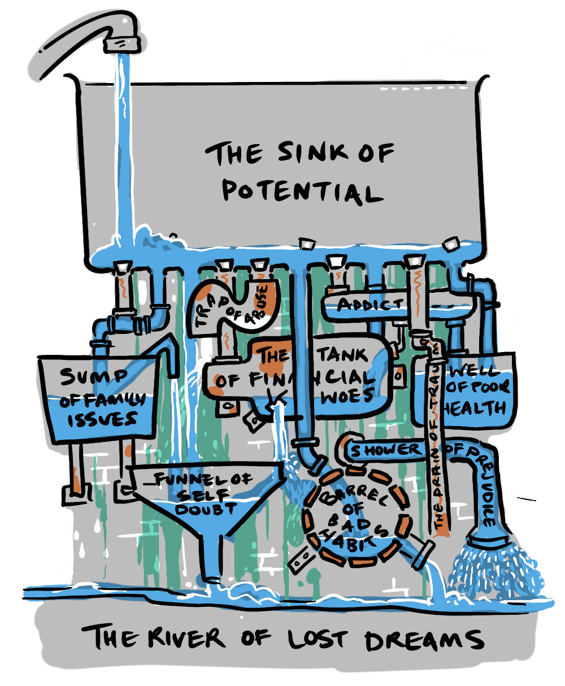

When I was eleven, I disassembled the lock to our back door, and as I opened the housing... it exploded, scattering six tiny brass pellets on to the floor.
I discovered (too late) that a lock of this type contained spring-loaded cylinders of different heights corresponding to the teeth of the key.

I struggled for hours trying to get the little buggers back in, but it was futile—eventually, my long suffering parents called a locksmith.

The reason fixing the lock was so difficult was not only because it was spring-loaded but because I had to find the right combination and hold them all in balance as I put it back together. I just couldn't coordinate everything.
We sometimes run into problems where a number of factors have to be addressed simultaneously in order for them to be effective at all. One weak link can ruin it for the rest. These are called Coordination Problems. The fact that they are so much more difficult to solve than other problems means that, many of the problems remaining in the world today, end up being coordination problems.
An example of a system requiring more than one problem to be solved at once, is poaching. If you police poaching behavior but don't address the buyers you are left with the perpetual cost of policing, because the demand remains. If you address the buyers, the poachers, who are likely living in poverty may just move on to some other criminal behavior. Daniel Schmachtenberger tells the story of eliminating elephant poaching in one particular region in Africa:
"The first one I noticed when I was a kid was trying to solve an elephant poaching issue in one particular region of Africa that didn't address the poverty of the people, that had no mechanism other than black market on poaching, didn't address people's mindset towards animals, didn't address the macro-economy that created poverty at scale. So when the laws were put in place and the fences were put in place to protect those elephants in that area better, the poachers moved to poaching other animals, particularly in that situation, rhinos and gorillas that were both more endangered than the elephants had been."—Daniel Schmachtenberger
Schmachtenberger explores this concept on a much grander scale with the issue of the meta-crisis, which we have touched on briefly in Humanity's Alignment Problem, and, to which, we will dedicate a future post.
Another illustration of a coordination problem comes from the opening line of the novel, Anna Karenina:
"Every happy family is the same, but every unhappy family is unhappy in its own way"
The point being made here is that (according to Tolstoy) a happy family needs to have everything aligned, so all such families share many traits, but for a family to be unhappy only one major problem is required. So, an unhappy family can have wealth, but also have an abusive family member, another might have love but no money, or they could have a strong social network, but one that is toxic and unhealthy, they could be strong and healthy but loveless.
Now, the unhappy families above include the traits of; love, financial security, health and strong social bonds—but it makes no sense to say that this means that those characteristics are failed strategies for a happy family. If a family has all of those attributes they'll probably be pretty gosh-darned happy. In this way a happy family is a coordination problem.
In "Guns, Germs and Steel", Jared Diamond uses a geographical determinist model to explain the different rates of development in different regions. He points to the Anna Karenina Principle to explain how, in the history of civilisational development, one missing ingredient in any culture's journey was enough to put them behind. A lack of domesticable animals, grains and seeds that were too small, a north-south geographical alignment rather than an east-west, or even conditions that were too ideal for remaining hunter gatherers—any one of these factors could halt a given people's agricultural revolution for thousands of years. Diamond was pointing to a coordination problem.

I have a particular interest which comes from my experience as a documentary filmmaker. The documentaries I'm involved in are all about real people overcoming obstacles. Over twenty years conducting long-form interviews and editing stories, I've worked with subjects going through the legal system, struggling with drug addiction, living in extreme poverty, overcoming systemic prejudice and inherited disadvantage, or simply facing low expectations and stereotypes.
Despite their best efforts, setbacks come in a multitude of unexpected forms, any one of them threatening to have progress revert to the mean. For subjects in a drug court pilot program, progress could be undone by an unfair decision at a rehab clinic, a problem in a personal relationship, a job loss, or even old friends—all driving them back into addictive behaviours.
For many young kids from the inner city, getting a scholarship to a university is not the end of the difficulties. Living expenses can mean they have to work long hours—impeding study time. A sense of alienation (stemming from being part of a different demographic to other students and professors) can make them feel unwelcome. Family problems can draw them back home, and implicit or explicit prejudice can drive them away.
Young adults in this situation may lack foundational skills (taken for granted in more affluent households and schools) and therefore might require breaks from study, which can lead to dropping out. They might have developed unhelpful habits or attitudes formed in teen years, or a sense of identity tied up with being part of a historically maligned group, affecting confidence and performance.
A scholarship is great, but it does nothing to address these other factors. And if these young adults fail, due to these other factors, there will be critics who argue that such scholarships are ineffective. In fact research shows that even negative societal attitudes towards affirmative action can affect its success.
"Persistent societal biases and prejudices remain significant barriers to the success of affirmative action initiatives" (Holzer & Neumark, 2000)
Critics of affirmative action often commit the of letting a failure in one area doom the entire enterprise. This ignores the interdependent nature of affirmative action.
HOW NOT TO SOLVE COORDINATION PROBLEMS
Focus on one variable. Implement one measure. If it fails for any reason, scrap the program.
The failure of a single component does not mean the program is fatally flawed; rather, it highlights the need for a comprehensive, coordinated approach. Like pins in a lock, each factor must be aligned simultaneously to unlock a successful outcome.
HOW TO SOLVE COORDINATION PROBLEMS
- Research all the variables.
- Design a system-wide approach to be implemented simultaneously.
- Monitor and adapt.
Often it won't be obvious what issues need to be addressed in a coordination problem, which means despite our best attempts to find points of weaknesses while researching and designing a plan, the nature of a coordination problem is that missing one element can lead to failure. If we eliminate individual failed solutions as options it becomes impossible to find the successful coordinated solution.
However, continued monitoring to look critically for those weak links can, over iterations, yield a positive result.
Many wrap-around programs have developed in this way, such as Berkeley's "Strengthening Academic Achievement of Students from Underrepresented Groups", University of Michigan's "Comprehensive Studies Program" and Georgetown University's "Community Scholars Program" have successfully increased retention, GPAs and graduation rates among minority students. And yet these solutions are still only focused on a short period of young person's life—there are still many opportunities to plug holes in the sink of potential between birth and college, and beyond.
Coordination problems are a particular type of non-zero-sum game, and they are all around us. Until they are solved, they are very much a negative-sum game. The key to solving coordination problems, including affirmative action, is understanding all variables, designing a system-wide approach, and not letting a failure in one area doom the enterprise.
In the shaping of stories for the documentaries I make, there is a pressure to find the "happily-ever-after" story. This is a function of the fact that audiences want to be inspired, to see the underdog win the championship. But the truth is, this is largely a fiction—people facing significant social barriers fail more often than not. There are statistical realities that can't be addressed by a naive appeal to heroic narratives. Statistical problems require systemic solutions. Coordination problems are the hardest of these problems, but with optimism, patience and iteration we can solve them.